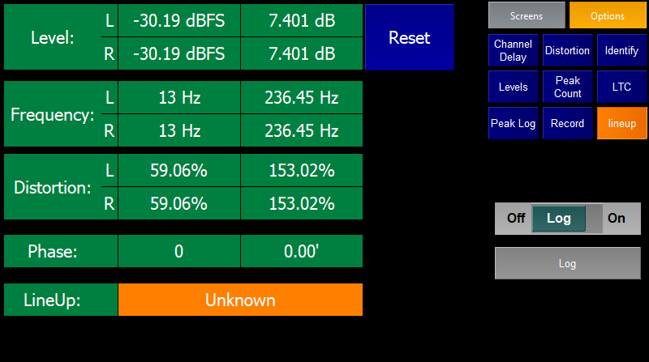

The lineup test plugin is intended to be used for lining up incoming audio lines.
The plugin recognises Mono Tone, Glits, EBU and Valid lineup tone and will display what type is incoming, if any.
It displays
- The incoming audio levels on the Left and Right leg followed by the audio range on each leg
- The dominant frequency of the incoming audio on each leg.
- The distortion in percent of the incoming audio on each leg.
- The phase difference between the legs in ms and degrees.
- The type of lineup tone that is incoming.